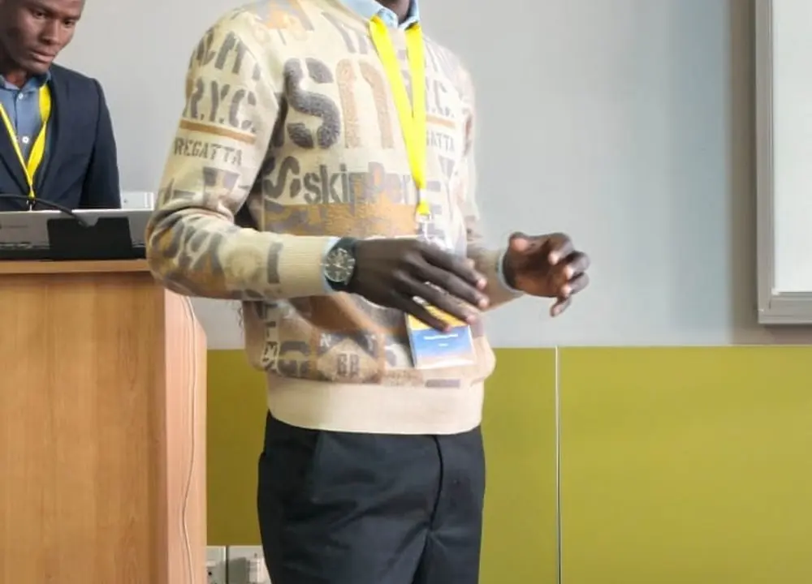

AFRICME7 in Johannesburg
Wits School of Education, University of the Witwatersrand, Johannesburg, South Africa, 2025

My role
I presented findings co-authored with the Africa Maths Initiative team, drawn from the pre/post evaluations I designed and ran for residential maths camps in Kenya and Tanzania (13 camps, 3,000+ participants).
Funding
KENET awarded me USD 2,000 to travel to Johannesburg and present at AFRICME7.
Outcomes
- Presented co-authored evaluation findings at AFRICME7
- Paper published in the AFRICME7 Book of Conference Proceedings (Facilitating a Positive Shift in Students' Engagement with Mathematics)
- Funded by a KENET conference grant
- Second co-authored paper accepted by Mathematics Teacher Education and Development, awaiting publication